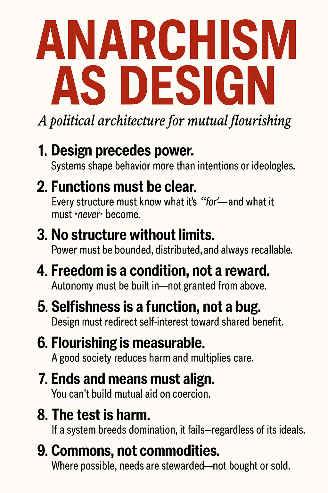
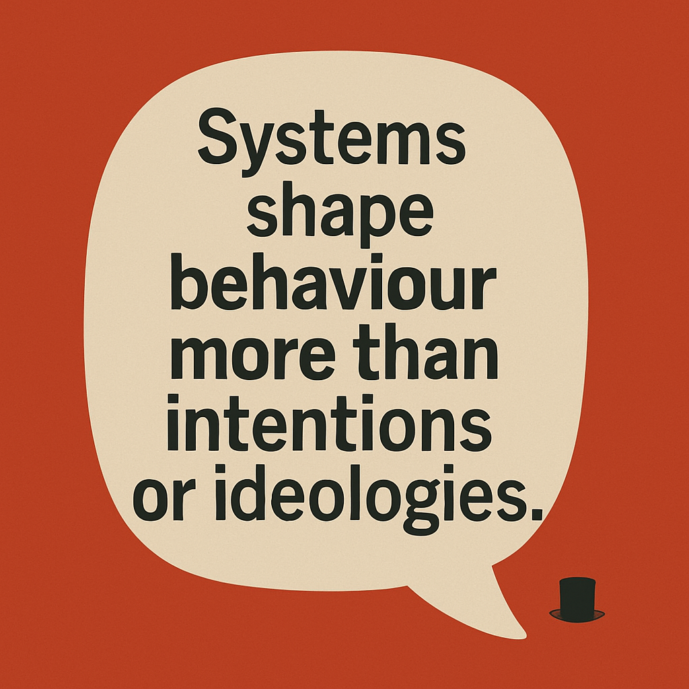

Design is not decoration. Design is choice, pattern, and power. In politics, as in architecture, how we build is what we build.
Principles

Commentaries

Design is not decoration. Design is choice, pattern, and power. In politics, as in architecture, how we build is what we build.